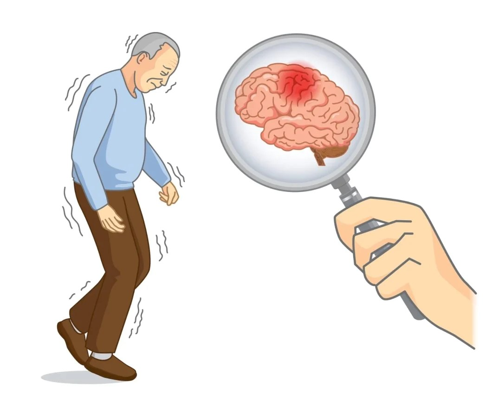
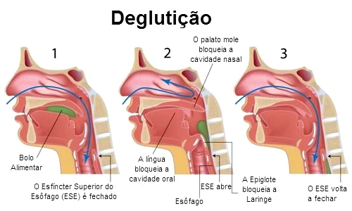

Home
Orientações
Por Berna Almeida
Voluntários
Doe
Contato
Home
Orientações
Por Berna Almeida
Voluntários
Doe
Contato
Orientações
ao paciente e cuidadores.
Doenças Degenerativas
Deglutição
Demência Corpos De Levy
Demência Frontotemporal
Demência Precoce
Demência Vascular
Demências
Direitos das pessoas com Demências
Disfargia
Doença de Alzheimer
Doença de Parkinson
Doença de Pick
Doenças Degenerativas
Pneumonia
Saúde
A doença Alzheimer e a sua consequência na saúde bucal
Como limpar a boca dos idosos
Cuidados com a dentadura
Higiene Bucal
Próteses Dentárias
Saburra Lingual
Saúde bucal em pessoas com demências
Alimentação
10 passos da alimentação saudável
Alimentação dos idosos
Batata doce tem benefícios
Cará 9 benefícios
Conheça os benefícios do maracujá
Intestino preso Sonolento
Jurídico
A interdição Judicial e o Idoso com Demência de Alzheimer
Ação de curatela
Direito das pessoas com Demências
Esclarecimentos comuns - curatela e TDA
Estatuto do idoso
Idoso - tem 60 anos ou mais
Responsabilidade com as Pessoas com Deficiência Mental
Isenção de Imposto de Renda para Portadores de Doenças Graves
O papel do curador.html
Tomada de Decisão Apoiada e Curatela
Musicoterapia
Sessão Cinema
Livros
10 passos para alimentação saudavel
Ação de curatela
Demência

Parkinson
Próteses Dentarias
Alimentação Saúdavel
Estatuto do Idoso

Deglutição
Saúde do Idoso
←Veja mais posts no menu ao lado

.png)